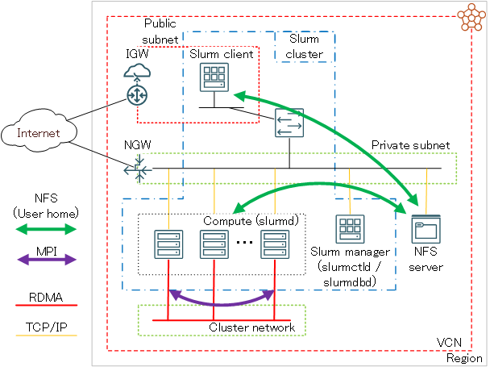

HPC/GPUクラスタのリソース管理・ジョブ管理は、ジョブスケジューラを活用することでこれを効率的かつ柔軟に運用することが可能です。近年のHPC/機械学習ワークロードの大規模化は、MPI等を使ったノード間並列ジョブの重要性を増大させ、このような大規模ジョブを様々な運用ポリシーに沿って処理出来る機能をジョブスケジューラに求めています。オープンソースのジョブスケジューラ Slurm は、この要求を満足出来る代表的なジョブスケジューラとして現在人気を集めています。
本テクニカルTipsは、HPC/機械学習ワークロードの実行に最適なベアメタルインスタンスを高帯域・低遅延RDMAインターコネクトサービスの クラスタ・ネットワーク で接続するHPC/GPUクラスタで、リソース管理・ジョブ管理システムを Slurm で構築する手順を解説します。
本テクニカルTipsは、次章で説明する前提システムが予めデプロイされており、このシステム上に Slurm 環境を構築する手順にフォーカスします。
また Slurm のバージョンは、 23.11.0 を前提とします。
0. 前提システム
本章は、本テクニカルTipsで解説する Slurm 環境構築手順の前提となるシステムを解説します。
0-1. サブシステム構成
本システムは、以下4種類のサブシステムから構成されます。
| サブシステム | 使用するシェイプ | OS | ノード数 | 接続 サブネット |
役割 |
|---|---|---|---|---|---|
| Slurm マネージャ |
任意の仮想マシン （※1） |
Oracle Linux 8 | 1 | プライベート | slurmctld と slurmdbd が稼働するSlurm管理ノード |
| Slurm クライアント |
任意の仮想マシン （※1） |
Oracle Linux 8 | 1 | パブリック | インターネットからログインするBastionノード Slurm にジョブを投入するジョブサブミッションクライアント |
| 計算ノード | クラスタ・ネットワーク 対応ベアメタルシェイプ （※2） |
Oracle Linux 8 | 2ノード以上 | プライベート クラスタ・ネットワーク |
slurmd が稼働するジョブ実行ノード |
| NFSサーバ | - （※3） |
- | 1 | プライベート | ジョブ投入ユーザのホームディレクトリをNFSでサービス（※4） |

※1）本テクニカルTipsは、 VM.Optimized3.Flex を使用します。
※2）本テクニカルTipsは、 BM.Optimized3.36 を使用します。
※3）ファイル・ストレージ や ブロック・ボリューム NFSサーバ等、任意の手法で構築されたNFSサーバです。NFSでサービスするファイル共有ストレージ構築方法は、 OCI HPCテクニカルTips集 の コストパフォーマンスの良いファイル共有ストレージ構築方法 を参照ください。
※4）NFSサーバがサービスするジョブ投入ユーザのホームディレクトリは、Slurmクライアントと計算ノードがNFSクライアントとなり、 /mnt/nfs/home/user_name でマウントします。
また、本テクニカルTipsの各サブシステムのホスト名は、以下とします。
以降の章では、これらのホスト名を自身の環境に置き換えて使用して下さい。
| サブシステム | ホスト名 |
|---|---|
| Slurmマネージャ | slurm-srv |
| Slurmクライアント | slurm-cli |
| 計算ノード | inst-qiuim-x9 inst-wxedu-x9 |
0-2. セキュリティーポリシー
各サブシステムのセキュリティポリシーは、接続するサブネットに応じて以下のように設定します。
| 接続するサブネット | firewalld | SElinux |
|---|---|---|
| パブリック | 仮想クラウド・ネットワークの CIDRからのアクセスを全て許可 |
NFS領域をホームディレクトリとして許可（※5） |
| プライベート | 停止 | 無効化 |
※5）以下コマンドを対象となるノードのopcユーザで実行します。
$ sudo setsebool -P use_nfs_home_dirs on
また、接続するサブネットの セキュリティー・リスト も上記セキュリティーポリシーに合わせて必要な設定を適用します。
1. Slurm環境構築
1-0. 概要
本章は、既にデプロイされている 前提システム で解説したシステム上で、 Slurm 環境を構築する手順を解説します。
Slurm のインストールは、多数の計算ノードに効率よくインストールする必要から、rpmbuildで作成するrpmパッケージによるインストール方法を採用します。
また、 Slurm のプロセス間通信の認証に munge 、ジョブのアカウンティング情報格納用RDBMSに MariaDB を使用します。
また、ノードを跨ぐワークロード実行にMPIを想定し、 OCI HPCテクニカルTips集 の Slurm環境での利用を前提とするOpenMPI構築方法 に従い、 OpenPMIx を利用する OpenMPI をインストールします。
以上より、本章で解説する Slurm 環境構築は、以下の手順に沿って行います。
- munge インストール・セットアップ
- MariaDB インストール・セットアップ
- OpenPMIx インストール
- UCX インストール
- OpenMPI インストール
- Slurm rpmパッケージ作成
- Slurm rpmパッケージインストール・セットアップ
- Slurm 設定ファイル作成
- Slurm サービス起動・確認
なお、 munge 、 MariaDB 及び各 Slurm サービスは、以下のサブシステムにインストールします。
| Slurmマネージャ | Slurmクライアント | 計算ノード | |
|---|---|---|---|
| munge | 〇 | 〇 | 〇 |
| MariaDB | 〇 | - | - |
| slurmctld | 〇 | - | - |
| slurmdbd | 〇 | - | - |
| slurmd | - | - | 〇 |
| Slurm クライアントパッケージ |
〇 | 〇 | 〇 |
1-1. munge インストール・セットアップ
本章は、Slurmマネージャ、Slurmクライアント、及び計算ノードに munge をインストール・セットアップします。
-
以下コマンドを対象となる全ノードのopcユーザで実行し、 munge プロセス起動ユーザを作成します。
$ sudo useradd -m -d /var/lib/munge -s /sbin/nologin -u 5001 munge -
以下コマンドを対象となる全ノードのopcユーザで実行し、 munge をインストールします。
$ sudo dnf install -y munge munge-libs $ cd ~; wget https://rpmfind.net/linux/centos/8-stream/PowerTools/x86_64/os/Packages/munge-devel-0.5.13-2.el8.x86_64.rpm $ sudo rpm -ivh ./munge-devel-0.5.13-2.el8.x86_64.rpm -
以下コマンドをSlurmマネージャのopcユーザで実行し、 munge キーファイル（munge.key）を作成します。
$ sudo /usr/sbin/create-munge-key Generating a pseudo-random key using /dev/urandom completed. $ sudo ls -la /etc/munge total 16 drwx------. 2 munge munge 23 Nov 24 14:34 . drwxr-xr-x. 115 root root 8192 Nov 24 14:33 .. -r--------. 1 munge munge 1024 Nov 24 14:34 munge.key $ -
先にSlurmマネージャで作成した munge キーファイルを、Slurmクライアントと計算ノードに同一パス・ファイル名でコピーします。
この際、ファイルのオーナーとパーミッションがSlurmマネージャのキーファイルと同じとなるよう配慮します。 -
以下コマンドを対象となる全ノードのopcユーザで実行し、 munge サービスを起動します。
$ sudo systemctl enable --now munge.service -
以下コマンドを対象となる全ノードのopcユーザで実行し、 munge が全てのノードで正常に動作していることを確認します。
$ munge -n | unmunge | grep STATUS STATUS: Success (0) $
1-2. MariaDB インストール・セットアップ
本章は、Slurmマネージャに MariaDB をインストール・セットアップします。
-
以下コマンドをSlurmマネージャのopcユーザで実行し、 MariaDB をインストールします。
$ sudo dnf install -y mariadb-server mariadb-devel -
MariaDB の設定ファイル（mariadb-server.cnf）の[mysqld]フィールドに以下の記述を追加します。
$ sudo diff /etc/my.cnf.d/mariadb-server.cnf_org /etc/my.cnf.d/mariadb-server.cnf 20a21,22 > innodb_buffer_pool_size=4096M > innodb_lock_wait_timeout=900 $ -
以下コマンドをSlurmマネージャのopcユーザで実行し、 MariaDB サービスを起動します。
$ sudo systemctl enable --now mariadb -
MariaDB のデータベースに以下の登録を行うため、
- データベース（slurm_acct_db）
- ユーザ（slurm）
- ユーザ（slurm）のパスワード
- ユーザ（slurm）に対するデータベース（slurm_acct_db）への全権限付与
以下コマンドをSlurmマネージャのopcユーザで実行します。
$ sudo mysql MariaDB [(none)]> create database slurm_acct_db; MariaDB [(none)]> create user 'slurm'@'localhost' identified by 'SLURM'; MariaDB [(none)]> set password for slurm@localhost = password('passcord'); MariaDB [(none)]> grant all on slurm_acct_db.* TO 'slurm'@'localhost'; MariaDB [(none)]> FLUSH PRIVILEGES; MariaDB [(none)]> Ctrl-c $なお、コマンド中の passcord は、自身の設定するパスワードに置き換えます。
-
以下コマンドをSlurmマネージャのopcユーザで実行し、先に登録したデータベースとユーザが正しく登録されていることを確認します。
$ mysql --user=slurm --password=passcord slurm_acct_db -e 'show databases;' +--------------------+ | Database | +--------------------+ | information_schema | | slurm_acct_db | +--------------------+ $なお、コマンド中の passcord は、自身の設定したパスワードに置き換えます。
1-3. OpenPMIxインストール
本章は、Slurmマネージャ、Slurmクライアント、及び計算ノードに OpenPMIx をインストールします。
具体的には、 OCI HPCテクニカルTips集 の Slurm環境での利用を前提とするOpenMPI構築方法 の 1. OpenPMIxインストール を実施します。
1-4. UCXインストール
本章は、Slurmマネージャと計算ノードに UCX をインストールします。
-
以下コマンドを対象となる全ノードのopcユーザで実行し、 UCX をインストールします。
$ sudo dnf install -y gcc-c++ gcc-gfortran $ cd ~; wget https://github.com/openucx/ucx/releases/download/v1.15.0/ucx-1.15.0.tar.gz $ tar -xvf ./ucx-1.15.0.tar.gz $ cd ucx-1.15.0; ./contrib/configure-release --prefix=/opt/ucx $ make $ sudo make install
1-5. OpenMPIインストール
本章は、Slurmクライアントと計算ノードに OpenMPI をインストールします。
具体的には、 OCI HPCテクニカルTips集 の Slurm環境での利用を前提とするOpenMPI構築方法 の 2. OpenMPIインストール を実施します。
1-6. Slurm rpmパッケージ作成
本章は、Slurmマネージャでrpmパッケージを作成します。
-
以下コマンドをSlurmマネージャのopcユーザで実行し、 Slurm の前提ソフトウェアをインストールします。
$ sudo dnf install -y rpm-build pam-devel perl readline-devel -
以下コマンドをSlurmマネージャのopcユーザで実行し、 Slurm rpmパッケージを作成します。
$ cd ~; wget https://download.schedmd.com/slurm/slurm-23.11.0-0rc1.tar.bz2 $ rpmbuild --define '_prefix /opt/slurm' --define '_slurm_sysconfdir /opt/slurm/etc' --define '_with_pmix --with-pmix=/opt/pmix' --define '_with_ucx --with-ucx=/opt/ucx' -ta ./slurm-23.11.0-0rc1.tar.bz2作成されたパッケージは、以下のディレクトリに配置されるので、これらの全ファイルを他のサブシステムにコピーします。
$ ls -1 rpmbuild/RPMS/x86_64/ slurm-23.11.0-0rc1.el8.x86_64.rpm slurm-contribs-23.11.0-0rc1.el8.x86_64.rpm slurm-devel-23.11.0-0rc1.el8.x86_64.rpm slurm-example-configs-23.11.0-0rc1.el8.x86_64.rpm slurm-libpmi-23.11.0-0rc1.el8.x86_64.rpm slurm-openlava-23.11.0-0rc1.el8.x86_64.rpm slurm-pam_slurm-23.11.0-0rc1.el8.x86_64.rpm slurm-perlapi-23.11.0-0rc1.el8.x86_64.rpm slurm-sackd-23.11.0-0rc1.el8.x86_64.rpm slurm-slurmctld-23.11.0-0rc1.el8.x86_64.rpm slurm-slurmd-23.11.0-0rc1.el8.x86_64.rpm slurm-slurmdbd-23.11.0-0rc1.el8.x86_64.rpm slurm-torque-23.11.0-0rc1.el8.x86_64.rpm $
1-7. Slurm rpmパッケージインストール・セットアップ
本章は、先に作成した Slurm rpmパッケージを各サブシステムにインストールし、必要なセットアップ作業を実施します。
-
以下コマンドをSlurmマネージャのopcユーザで実行し、Slurmマネージャに必要な Slurm rpmパッケージのインストール・セットアップを行います。
$ cd ~/rpmbuild/RPMS/x86_64 $ sudo rpm -ivh ./slurm-23.11.0-0rc1.el8.x86_64.rpm ./slurm-slurmctld-23.11.0-0rc1.el8.x86_64.rpm ./slurm-slurmdbd-23.11.0-0rc1.el8.x86_64.rpm ./slurm-perlapi-23.11.0-0rc1.el8.x86_64.rpm $ sudo useradd -m -d /var/lib/slurm -s /bin/bash -u 5000 slurm $ sudo mkdir /var/spool/slurmctld; sudo chown slurm:slurm /var/spool/slurmctld $ sudo mkdir /var/spool/slurmd; sudo chown slurm:slurm /var/spool/slurmd $ sudo mkdir /var/log/slurm; sudo chown slurm:slurm /var/log/slurm $ sudo mkdir /opt/slurm/etc; sudo chown slurm:slurm /opt/slurm/etc $ sudo su - slurm $ echo "export PATH=\$PATH:/opt/slurm/sbin:/opt/slurm/bin" | tee -a ~/.bash_profile $ echo "export MANPATH=\$MANPATH:/opt/slurm/share/man" | tee -a ~/.bash_profile $ source ~/.bash_profile -
計算ノードの Slurm rpmパッケージをコピーしたディレクトリで以下コマンドをopcユーザで実行し、計算ノードに必要な Slurm rpmパッケージのインストール・セットアップを行います。
$ sudo dnf install -y mariadb-devel $ sudo rpm -ivh ./slurm-23.11.0-0rc1.el8.x86_64.rpm ./slurm-slurmd-23.11.0-0rc1.el8.x86_64.rpm ./slurm-perlapi-23.11.0-0rc1.el8.x86_64.rpm $ sudo useradd -m -d /var/lib/slurm -s /bin/bash -u 5000 slurm $ sudo mkdir /var/spool/slurmd; sudo chown slurm:slurm /var/spool/slurmd $ sudo mkdir /var/log/slurm; sudo chown slurm:slurm /var/log/slurm $ sudo mkdir /opt/slurm/etc; sudo chown slurm:slurm /opt/slurm/etc -
Slurmクライアントの Slurm rpmパッケージをコピーしたディレクトリで以下コマンドをopcユーザで実行し、Slurmクライアントに必要な Slurm rpmパッケージのインストール・セットアップを行います。
$ sudo dnf install -y mariadb-devel $ sudo rpm -ivh ./slurm-23.11.0-0rc1.el8.x86_64.rpm ./slurm-perlapi-23.11.0-0rc1.el8.x86_64.rpm $ sudo useradd -m -d /var/lib/slurm -s /bin/bash -u 5000 slurm $ sudo mkdir /opt/slurm/etc; sudo chown slurm:slurm /opt/slurm/etc $ echo '* soft memlock unlimited' | sudo tee -a /etc/security/limits.conf $ echo '* hard memlock unlimited' | sudo tee -a /etc/security/limits.conf
1-8. Slurm設定ファイル作成
本章は、以下3種類の Slurm 設定ファイルを作成し、これらを各サブシステムの/opt/slurm/etcディレクトリに配布します。
この際、これらファイルのオーナーユーザ・オーナーグループをslurmとします。
また、slurmdbd.confのパーミッションを600に設定します。
- slurm.conf（全てのサブシステム）
- slurmdbd.conf（Slurmマネージャ）
- mpi.conf（Slurmマネージャ）
[slurm.conf]
ClusterName=sltest
SlurmctldHost=slurm-srv
AuthType=auth/munge
PluginDir=/opt/slurm/lib64/slurm
SchedulerType=sched/backfill
SelectType=select/linear
SlurmUser=slurm
SlurmctldPort=7002
SlurmctldTimeout=300
SlurmdPort=7003
SlurmdSpoolDir=/var/spool/slurmd
SlurmdTimeout=300
SlurmctldLogFile=/var/log/slurm/slurmctld.log
SlurmdLogFile=/var/log/slurm/slurmd.log
SlurmdDebug=3
StateSaveLocation=/var/spool/slurmd
SwitchType=switch/none
AccountingStorageType=accounting_storage/slurmdbd
AccountingStorageHost=slurm-srv
AccountingStoragePort=7004
MpiDefault=pmix
NodeName=DEFAULT CPUs=72 Boards=1 SocketsPerBoard=2 CoresPerSocket=18 ThreadsPerCore=2 RealMemory=500000 TmpDisk=10000 State=UNKNOWN
NodeName=inst-qiuim-x9,inst-wxedu-x9
PartitionName=sltest Nodes=ALL Default=YES MaxTime=INFINITE State=UP
なお、 SlurmctldHost 、 AccountingStorageHost 、及び NodeName の設定値は、自身の環境に合わせて修正します。
[slurmdbd.conf]
ArchiveEvents=yes
ArchiveJobs=yes
ArchiveResvs=yes
ArchiveSteps=no
ArchiveSuspend=no
ArchiveTXN=no
ArchiveUsage=no
AuthType=auth/munge
AuthInfo=/var/run/munge/munge.socket.2
DbdHost=slurm-srv
DbdPort=7004
DebugLevel=info
PurgeEventAfter=1month
PurgeJobAfter=12month
PurgeResvAfter=1month
PurgeStepAfter=1month
PurgeSuspendAfter=1month
PurgeTXNAfter=12month
PurgeUsageAfter=24month
LogFile=/var/log/slurm/slurmdbd.log
PidFile=/var/run/slurmdbd/slurmdbd.pid
SlurmUser=slurm
StorageType=accounting_storage/mysql
StorageUser=slurm
StoragePass=passcord
StorageLoc=slurm_acct_db
なお、 DbdHost と StoragePass の設定値は、自身の環境に合わせて修正します。
[mpi.conf]
PMIxDirectConnEarly=true
PMIxDirectConnUCX=true
1-9. Slurmサービス起動・確認
本章は、 Slurm の各systemdサービスを対象のサブシステムで起動します。
-
以下コマンドを計算ノードのopcユーザで実行し、slurmdを起動します。
$ sudo systemctl enable --now slurmd -
以下コマンドをSlurmマネージャのopcユーザで実行し、slurmdbdとslurmctldを起動します。
$ sudo systemctl enable --now slurmdbd $ sudo systemctl start slurmctldslurmctldは、計算ノードのslurmd起動完了後に起動するため、手動起動を想定して自動起動設定は行いません。
-
以下コマンドをSlurmマネージャのslurmユーザで実行し、計算ノードがアイドルになっていることを確認します。
$ sinfo PARTITION AVAIL TIMELIMIT NODES STATE NODELIST sltest* up infinite 2 idle inst-qiuim-x9,inst-wxedu-x9 $ -
以下コマンドをSlurmマネージャのslurmユーザで実行し、 OpenPMIx が利用可能になっていることを確認します。
$ srun --mpi=list MPI plugin types are... none cray_shasta pmi2 pmix specific pmix plugin versions available: pmix_v4 $
2. Slurm稼働確認
本章は、構築した Slurm 環境を稼働確認するため、ホームディレクトリをNFSで共有するジョブ投入ユーザで Intel MPI Benchmark を実行するバッチジョブを実行し、その結果を確認します。
またこのジョブの終了後、そのアカウンティング情報を取得できることを確認します。
-
以下コマンドをSlurmクライアントのジョブ投入ユーザで実行し、 Slurm 関連の環境変数を設定します。
$ echo "export PATH=\$PATH:/opt/slurm/sbin:/opt/slurm/bin" | tee -a ~/.bash_profile $ echo "export MANPATH=\$MANPATH:/opt/slurm/share/man" | tee -a ~/.bash_profile $ source ~/.bash_profile -
OCI HPCテクニカルTips集 の Slurm環境での利用を前提とするOpenMPI構築方法 の 3. OpenMPI稼働確認 の1.の手順を実施し、 Intel MPI Benchmark をインストールします。
-
Intel MPI Benchmark を実行する以下のジョブスクリプトをジョブ投入ユーザのホームディレクトリ直下にsubmit.shとして作成します。
#!/bin/bash #SBATCH -p sltest #SBATCH -n 2 #SBATCH -N 2 #SBATCH -J ping_ping #SBATCH -o stdout.%J #SBATCH -e stderr.%J export UCX_NET_DEVICES=mlx5_2:1 srun /opt/openmpi-5.0.0/tests/imb/IMB-MPI1 -msglog 27:28 pingpong -
以下コマンドをSlurmクライアントのジョブ投入ユーザで実行し、バッチジョブの投入とその結果確認を行います。
$ cd ~; sbatch submit.sh Submitted batch job xxx $ cat stdout.xxx #---------------------------------------------------------------- # Intel(R) MPI Benchmarks 2021.7, MPI-1 part #---------------------------------------------------------------- # Date : Thu Nov 30 18:27:27 2023 # Machine : x86_64 # System : Linux # Release : 4.18.0-425.13.1.el8_7.x86_64 # Version : #1 SMP Tue Feb 21 15:09:05 PST 2023 # MPI Version : 3.1 # MPI Thread Environment: # Calling sequence was: # /opt/openmpi-5.0.0/tests/imb/IMB-MPI1 -msglog 27:28 pingpong # Minimum message length in bytes: 0 # Maximum message length in bytes: 268435456 # # MPI_Datatype : MPI_BYTE # MPI_Datatype for reductions : MPI_FLOAT # MPI_Op : MPI_SUM # # # List of Benchmarks to run: # PingPong #--------------------------------------------------- # Benchmarking PingPong # #processes = 2 #--------------------------------------------------- #bytes #repetitions t[usec] Mbytes/sec 0 1000 1.59 0.00 134217728 1 10969.75 12235.26 268435456 1 21937.21 12236.53 # All processes entering MPI_Finalize $ -
以下コマンドをSlurmクライアントのジョブ投入ユーザで実行し、終了したジョブのアカウンティング情報が取得できることを確認します。
$ sacct -j xxx -o JobID,User,AllocCPUS,Start,End JobID User AllocCPUS Start End ------------ --------- ---------- ------------------- ------------------- 7 miyat 144 2023-11-30T18:27:27 2023-11-30T18:27:28 7.batch 72 2023-11-30T18:27:27 2023-11-30T18:27:28 7.0 144 2023-11-30T18:27:27 2023-11-30T18:27:28 $